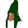

Gnome trainer

| Config name | gnometrainer |
| NPC id | 162 |
| Combat level | hidden |
| Options | Talk-to |
| Wander range | 5 tiles from spawn |
| Area folder | area_gnome |
| Defined in | scripts/areas/area_gnome/configs/gnome.npc |
Gnome trainer
He can advise on training.
Show all 11 spawns on the world map → Open in knowledge graph →
Locations
| Area | Coordinates | Level | Count | Map |
|---|---|---|---|---|
| Agility Training Area | 2469, 3423 | 0 | 1 | view |
| Agility Training Area | 2469, 3434 | 0 | 1 | view |
| Agility Training Area | 2470, 3426 | 0 | 1 | view |
| Agility Training Area | 2475, 3421 | 2 | 1 | view |
| Agility Training Area | 2475, 3422 | 1 | 1 | view |
| Agility Training Area | 2477, 3426 | 0 | 1 | view |
| Agility Training Area | 2479, 3427 | 0 | 1 | view |
| Agility Training Area | 2482, 3422 | 0 | 1 | view |
| Agility Training Area | 2489, 3423 | 0 | 1 | view |
| Agility Training Area | 2489, 3427 | 0 | 1 | view |
| Agility Training Area | 2490, 3435 | 0 | 1 | view |
Dialogue
PlayerHello how are you?
Gnome trainerI'm amazed by how much humans chat. The sign over there says training area, not pointless conversation area.
PlayerHello, what is this place?
Gnome trainerThis, my friend, is where we train. Here we improve our agility. It's an essential skill.
PlayerIt looks easy enough.
Gnome trainerIf you complete the course in order from the slippery log to the end, your agility will increase much faster than by repeating just one obstacle.
PlayerThis is fun!
Gnome trainerThis is training soldier. If you want fun go make some cocktails.
PlayerHello there.
Gnome trainerThis isn't a grannies' tea party, let's see some sweat human. Go! Go! Go!
Referenced in scripts
scripts/areas/area_gnome/scripts/gnome_trainer.rs2scripts/skill_agility/scripts/gnome_course.rs2